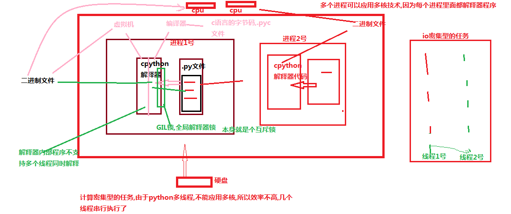
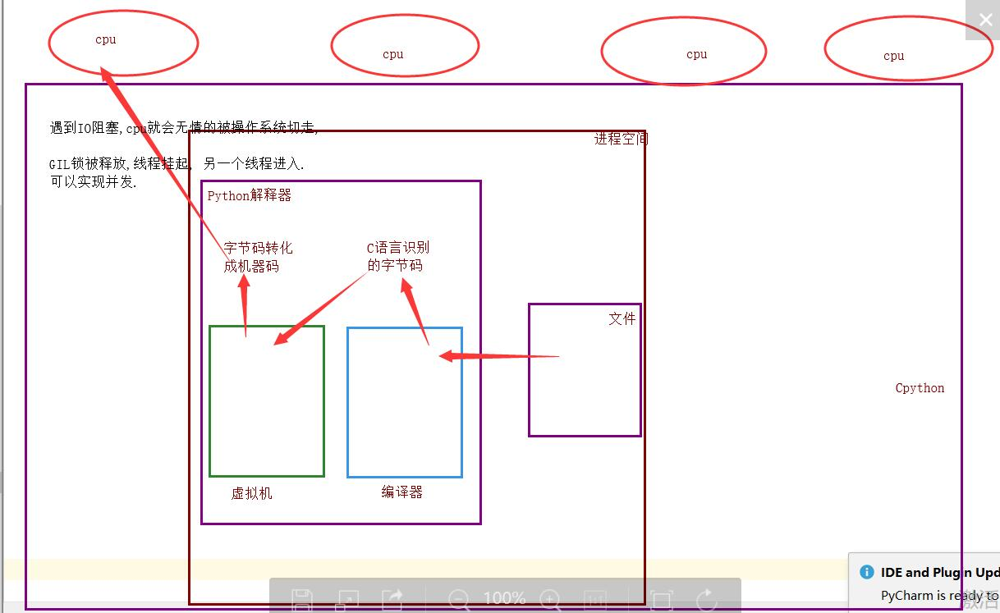

目录
# 在传统操作系统中，每个进程有一个地址空间，而且默认就有一个控制线程
# 线程顾名思义，就是一条流水线工作的过程，一条流水线必须属于一个车间，一个车间的工作过程是一个进程
# 车间负责把资源整合到一起，是一个资源单位，而一个车间内至少有一个流水线
# 流水线的工作需要电源，电源就相当于cpu进程只是用来把资源集中到一起（进程只是一个资源单位，或者说资源集合），而线程才是cpu上的执行单位。
多线程（即多个控制线程）的概念是，在一个进程中存在多个控制线程，多个控制线程共享该进程的地址空间，相当于一个车间内有多条流水线，都共用一个车间的资源
1.线程共享创建它的进程的地址空间；进程有自己的地址空间。
2.线程可以直接访问其进程的数据段；进程有自己的父进程数据段副本。
3.线程可以直接与其进程的其他线程通信；进程必须使用进程间通信与兄弟进程通信。
4.新线程很容易创建；新进程需要父进程的重复。
5.线程可以对同一进程的线程进行相当大的控制；进程只能对子进程进行控制。
6.对主线程的更改（取消、优先级更改等）可能会影响进程的其他线程的行为；对父进程的更改不会影响子进程。多线程指的是，在一个进程中开启多个线程，简单的讲：如果多个任务共用一块地址空间，那么必须在一个进程内开启多个线程。详细的讲分为4点：
1. 多线程共享一个进程的地址空
2. 线程比进程更轻量级，线程比进程更容易创建可撤销，在许多操作系统中，创建一个线程比创建一个进程要快10-100倍，在有大量线程需要动态和快速修改时，这一特性很有用
3. 若多个线程都是cpu密集型的，那么并不能获得性能上的增强，但是如果存在大量的计算和大量的I/O处理，拥有多个线程允许这些活动彼此重叠运行，从而会加快程序执行的速度。
4. 在多cpu系统中，为了最大限度的利用多核，可以开启多个线程，比开进程开销要小的多。（这一条并不适用于python）from threading import Thread
import time
def task(name):
print(f'{name} is running')
time.sleep(1)
print(f'{name} is gone')
if __name__ == '__main__':
p = Tread(target = task,args = ('小冯',))
p.start()
print('===主线程') # 线程是没有主次之分的from threading import Thread
import time
class MyThread(Thread):
def __init__(self,name):
super().__init__()
self.name = name
def run(self):
print(f'{self.name} is running')
time.sleep(1)
print(f'{self.name} is gone')
if __name__ == '__main__':
p = MyThread('小冯')
p.start()
print('主===>')from multiprocessing import Prcess
import os
def task():
print('子进程')
if __name__ == '__main__':
p = Process(target = task)
p.start()
print('主===>')from threading import Thread
import time
def task(name):
print(f'{name} is running')
time.sleep(1)
print(f'{name} is gone')
if __name__ == '__main__':
p = Tread(target = task,args = ('小冯',))
p.start()
print('===主线程') # 线程是没有主次之分的# 进程
from multiprocessing import Process
import time
import os
def task(name):
print(f'子进程: {os.getpid()}')
print(f'主进程: {os.getppid()}')
if __name__ == '__main__':
p1 = Process(target=task,args=('常鑫',)) # 创建一个进程对象
p2 = Process(target=task,args=('常鑫',)) # 创建一个进程对象
p1.start()
p2.start()
print(f'==主{os.getpid()}')
# 线程:
from threading import Thread
import os
def task():
print(os.getpid())
if __name__ == '__main__':
t1 = Thread(target=task)
t2 = Thread(target=task)
t1.start()
t2.start()
print(f'===主线程{os.getpid()}') # os.getpid()只是获取当前的进程号from threading import Thread
import os
x = 3
def task():
global x
x = 100
if __name__ == '__main__':
t1 = Thread(target=task)
t1.start()
t1.join()
print(f'===主线程{x}')
# 同一进程内的资源数据对于这个进程的多个线程来说是共享的.from threading import Thread,current_thread,enumerare,activeCount
import os
import time
x = 3
def task():
# print(currentThread())
time.sleep(1)
print('666')
print(123)
if __name__ == '__main__':
t1 = Thread(target=task,name='线程1')
t2 = Thread(target=task,name='线程2')
# name 设置线程名
t1.start()
t2.start()
# time.sleep(2)
# print(t1.isAlive()) # 判断线程是否活着
# print(t1.getName()) # 获取线程名
# t1.setName('子线程-1')
# print(t1.name) # 获取线程名 ***
# threading方法
# print(currentThread()) # 获取当前线程的对象
# print(enumerate()) # 返回一个列表,包含所有的线程对象
print(activeCount()) # ***
print(f'===主线程{os.getpid()}') join: 阻塞 告知主线程要等待我子线程执行完毕之后再执行主线程
from threading import Thread
import time
def task(name):
print(f'{name} is running')
time.sleep(1)
print(f'{name} is gone')
if __name__ == '__main__':
start_time = time.time()
t1 = Thread(target = task,args = ('小冯',))
t2 = Thread(target = task,args = ('小冯1',))
t3 = Thread(target = task,args = ('小冯2',))
t1.start()
t2.start()
t3.start()
print(f'===主线程{time.time() - start_time}') # 线程是没有主次之分的
# ---------------------------------------------------
# 守护线程
# 回忆一下守护进程
from multiprocessing import Process
import time
def foo():
print(123)
time.sleep(1)
print("end123")
def bar():
print(456)
time.sleep(2)
print("end456")
if __name__ == '__main__':
p1 = Process(target=foo,)
p2 = Process(target=bar,)
p1.daemon = True
p1.start()
p2.start()
print('====主')
# ---------------------------------------------------
# 守护线程
from threading import Thread
import time
def sayhi(name):
print('你滚!')
time.sleep(2)
print('%s say hello' %name)
if __name__ == '__main__':
t = Thread(target=sayhi,args=('egon',))
# t.setDaemon(True) #必须在t.start()之前设置
t.daemon = True
t.start() # 线程的开启速度要跟进程开很多
print('主线程')
# ---------------------------------------------------
from threading import Thread
import time
def foo():
print(123) # 1
time.sleep(1)
print("end123") # 4
def bar():
print(456) # 2
time.sleep(3)
print("end456") # 5
t1=Thread(target=foo)
t2=Thread(target=bar)
t1.daemon=True
t1.start()
t2.start()
print("main-------") # 3
# ---------------------------------------------------
# 主线程什么时候结束???
# 守护线程 等待非守护子线程以及主线程结束之后,结束.
from threading import Thread
import time
def foo():
print(123) # 1
time.sleep(3)
print("end123") # 4
def bar():
print(456) # 2
time.sleep(1)
print("end456") # 5
t1=Thread(target=foo)
t2=Thread(target=bar)
t1.daemon=True
t1.start()
t2.start()
print("main-------") # 3
# ---------------------------------------------------
from threading import Thread
import time
def foo():
print(123)
time.sleep(3)
print("end123")
def bar():
print(456)
time.sleep(1)
print("end456")
t1=Thread(target=foo)
t2=Thread(target=bar)
t1.daemon=True
t1.start()
t2.start()
print("main-------")from threading import Thread
import time
import random
x = 100
def task():
time.sleep(random.randint(1,2))
global x
temp = x
temp = temp - 1
x = temp
if __name__ == '__main__':
l1 = []
for i in range(100):
t = Thread(target=task)
l1.append(t)
t.start()
for i in l1:
i.join()
print(f'主线程{x}')
# 多个任务公抢一个数据,保证数据的安全的目的,要让其串行
from threading import Thread
from threading import Lock
import time
import random
x = 100
def task(lock):
lock.acquire()
# time.sleep(random.randint(1,2))
global x
temp = x
time.sleep(0.01)
temp = temp - 1
x = temp
lock.release()
if __name__ == '__main__':
mutex = Lock()
l1 = []
for i in range(100):
t = Thread(target=task,args=(mutex,))
l1.append(t)
t.start()
time.sleep(3)
print(f'主线程{x}')from threading import Thread,RLock,Lock
import time
lock_A = Lock()
lock_B = Lock()
class MyThread(Thread):
def run(self):
self.f1()
self.f2()
def f1(self):
lock_A.acquire()
print('f1拿到A锁')
lock_B.acquire()
print('f1拿到B锁')
lock_B.release()
lock_A.release()
def f2(self):
lock_B.acquire()
print('f2拿到B锁')
time.sleep(0.1)
lock_A.acquire()
print('f2拿到A锁')
lock_A.release()
lock_B.release()
if __name__ == '__main__':
for i in range(3):
p = MyThread()
p.start()
RLock, 同一把锁引用一次计数+1,释放一次计数-1,只要计数不为零,其他线程进程就抢不到.他能解决死锁问题
from threading import Thread,RLock,Lock,current_thread
import time
class MyThread(Thread):
def run(self):
self.f1()
self.f2()
def f1(self):
lock_A.acquire()
print('f1拿到A锁',current_thread().name)
lock_B.acquire()
print('f1拿到B锁',current_thread().name)
lock_B.release()
lock_A.release()
def f2(self):
lock_B.acquire()
print('f2拿到B锁',current_thread().name)
time.sleep(1)
lock_A.acquire()
print('f2拿到A锁',current_thread().name)
lock_A.release()
lock_B.release()
if __name__ == '__main__':
lock_A = lock_B = RLock()
for i in range(3):
p = MyThread()
p.start()同一时刻可以设置抢锁的线程或者进程数量
from threading import Thread,Semaphore,current_thread
import time,random
sem = Semaphore(5)
def task():
sem.acquire()
print(f'{current_thread().name} 厕所ing')
time.sleep(random.randint(1,3))
sem.release()
if __name__ == '__main__':
for i in range(20):
t = Thread(target = task)
t.start() 全局解释器锁, 同一时刻只能一个线程进入解释器, Cpython解释器具有的
优点: 保证了解释器的资源数据的安全
缺点: 单进程的多线程不能利用多核,(并行)
首先，一些语言（java、c++、c）是支持同一个进程中的多个线程是可以应用多核CPU的，也就是我们会听到的现在4核8核这种多核CPU技术的牛逼之处。那么我们之前说过应用多进程的时候如果有共享数据是不是会出现数据不安全的问题啊，就是多个进程同时一个文件中去抢这个数据，大家都把这个数据改了，但是还没来得及去更新到原来的文件中，就被其他进程也计算了，导致数据不安全的问题啊，所以我们是不是通过加锁可以解决啊，多线程大家想一下是不是一样的，并发执行就是有这个问题。但是python最早期的时候对于多线程也加锁，但是python比较极端的（在当时电脑cpu确实只有1核）加了一个GIL全局解释锁，是解释器级别的，锁的是整个线程，而不是线程里面的某些数据操作，每次只能有一个线程使用cpu，也就说多线程用不了多核，但是他不是python语言的问题，是CPython解释器的特性，如果用Jpython解释器是没有这个问题的，Cpython是默认的，因为速度快，Jpython是java开发的，在Cpython里面就是没办法用多核，这是python的弊病，历史问题，虽然众多python团队的大神在致力于改变这个情况，但是暂没有解决。（这和解释型语言（python，php）和编译型语言有关系吗？？？待定！，编译型语言一般在编译的过程中就帮你分配好了，解释型要边解释边执行，所以为了防止出现数据不安全的情况加上了这个锁，这是所有解释型语言的弊端？？）


但是有了这个锁我们就不能并发了吗？当我们的程序是偏计算的，也就是cpu占用率很高的程序（cpu一直在计算），就不行了，但是如果你的程序是I/O型的（一般你的程序都是这个）（input、访问网址网络延迟、打开/关闭文件读写），在什么情况下用的到高并发呢（金融计算会用到，人工智能（阿尔法狗），但是一般的业务场景用不到，爬网页，多用户网站、聊天软件、处理文件），I/O型的操作很少占用CPU，那么多线程还是可以并发的，因为cpu只是快速的调度线程，而线程里面并没有什么计算，就像一堆的网络请求，我cpu非常快速的一个一个的将你的多线程调度出去，你的线程就去执行I/O操作了，
'''
GIL锁与自己的锁?
相同点: 都是互斥锁.
GIL锁保证了解释器的资源数据的安全,
互斥锁保证的是进程线程中的数据安全.
线程池,进程池. 控制开启线程或者进程的数量.
IO密集型: 单进程的多线程并发.
计算密集型:多进程并发或者并行.
'''GIL VS Lock
机智的同学可能会问到这个问题，就是既然你之前说过了，Python已经有一个GIL来保证同一时间只能有一个线程来执行了，为什么这里还需要lock?
首先我们需要达成共识：锁的目的是为了保护共享的数据，同一时间只能有一个线程来修改共享的数据
然后，我们可以得出结论：保护不同的数据就应该加不同的锁。
最后，问题就很明朗了，GIL 与Lock是两把锁，保护的数据不一样，前者是解释器级别的（当然保护的就是解释器级别的数据，比如垃圾回收的数据），后者是保护用户自己开发的应用程序的数据，很明显GIL不负责这件事，只能用户自定义加锁处理，即Lock
过程分析：所有线程抢的是GIL锁，或者说所有线程抢的是执行权限
线程1抢到GIL锁，拿到执行权限，开始执行，然后加了一把Lock，还没有执行完毕，即线程1还未释放Lock，有可能线程2抢到GIL锁，开始执行，执行过程中发现Lock还没有被线程1释放，于是线程2进入阻塞，被夺走执行权限，有可能线程1拿到GIL，然后正常执行到释放Lock。。。这就导致了串行运行的效果
既然是串行，那我们执行
t1.start()
t1.join
t2.start()
t2.join()
这也是串行执行啊，为何还要加Lock呢，需知join是等待t1所有的代码执行完，相当于锁住了t1的所有代码，而Lock只是锁住一部分操作共享数据的代码。详解：
因为Python解释器帮你自动定期进行内存回收，你可以理解为python解释器里有一个独立的线程，每过一段时间它起wake up做一次全局轮询看看哪些内存数据是可以被清空的，此时你自己的程序 里的线程和 py解释器自己的线程是并发运行的，假设你的线程删除了一个变量，py解释器的垃圾回收线程在清空这个变量的过程中的clearing时刻，可能一个其它线程正好又重新给这个还没来及得清空的内存空间赋值了，结果就有可能新赋值的数据被删除了，为了解决类似的问题，python解释器简单粗暴的加了锁，即当一个线程运行时，其它人都不能动，这样就解决了上述的问题， 这可以说是Python早期版本的遗留问题。计算密集型:多进程的并发并行效率高
# 计算密集型: 单个进程的多线程并发 vs 多个进程的并发并行
def task():
count = 0
for i in range(10000000):
count += 1
if __name__ == '__main__':
# 多进程的并发,并行
start_time = time.time()
l1 = []
for i in range(4):
p = Process(target=task,)
l1.append(p)
p.start()
for p in l1:
p.join()
print(f'执行效率:{time.time()- start_time}') # 3.1402080059051514
# 多线程的并发
start_time = time.time()
l1 = []
for i in range(4):
p = Thread(target=task,)
l1.append(p)
p.start()
for p in l1:
p.join()
print(f'执行效率:{time.time()- start_time}') # 4.5913777351379395# 单个进程的多线程并发 vs 多个进程的并发并行
def task():
count = 0
time.sleep(random.randint(1,3))
count += 1
if __name__ == '__main__':
# 多进程的并发,并行
start_time = time.time()
l1 = []
for i in range(50):
p = Process(target=task,)
l1.append(p)
p.start()
for p in l1:
p.join()
print(f'执行效率:{time.time()- start_time}') # 8.000000000
# 多线程的并发
start_time = time.time()
l1 = []
for i in range(50):
p = Thread(target=task,)
l1.append(p)
p.start()
for p in l1:
p.join()
print(f'执行效率:{time.time()- start_time}') # 3.0294392108917236
# 对于IO密集型: 单个进程的多线程的并发效率高.from concurrent.futures import ProcessPoolExecutor,ThreadPoolExeccutor
import os,time,random
# print(os.cpu_count()) # 获取本机cpu的长度
def task(n):
print(f'{os.getpid()} 接客')
time.sleep(random.randint(1,3))
if __name__ == '__main__':
# 开启进程池 (并行(并行 + 并发)
p = ThreadPoolExecutor(5) # 默认不写, cpu个数*5 线程数
# p = ProcessPoolExecutor() # 默认不写, 进程池里面的进程数与cpu个数相等
# p.submit(task,1)
# p.submit(task,1)
# p.submit(task,1)
# p.submit(task,1)
# p.submit(task,1)
# p.submit(task,1)
# p.submit(task,1)
# for i in range(20):
# p.submit(task,i)
if i in range(20):
p.submit(task,i)进程运行的三个状态: 运行,就绪,阻塞.
执行的角度:
1.阻塞: 程序运行时,遇到了IO,程序挂起,cpu被切走.
2.非阻塞: 程序没有遇到IO,程序遇到IO但是我通过某种手段,让cpu强行运行我的程序.
提交任务的角度:
1.同步: 提交一个任务,自任务开始运行直到此任务结束(可能有IO),返回一个返回值之后,我在提交下一个任务.
2.异步: 一次提交多个任务,然后我就直接执行下一行代码.
返回结果如何回收?
给三个老师发布任务:
同步: 先告知第一个老师完成写书的任务,我从原地等待,等他两天之后完成了,告诉完事了,我在发布下一个任务......
异步:
直接将三个任务告知三个老师,我就忙我的我,直到三个老师完成之后,告知我.from concurrent.futures import ProcessPoolExecutor,ThreadPoolExecutor
import time
import random
import os
def task(i):
print(f'{os.getpid()}开始任务')
time.sleep(random.randint(1,3))
print(f'{os.getpid()}任务结束')
return i
if __name__ == '__main__':
# 异步调用
pool = ProcessPoolExecutor()
for i in range(10):
pool.submit(task,i)
pool.shutdown(wait=True)
# shutdown: 让我的主进程等待进程池中所有的子进程都结束任务之后,在执行. 有点类似与join.
# shutdown: 在上一个进程池没有完成所有的任务之前,不允许添加新的任务.
# 一个任务是通过一个函数实现的,任务完成了他的返回值就是函数的返回值.
print('===主')from concurrent.futures import ProcessPoolExecutor,ThreadPoolExecutor
import time
import random
import os
def task(i):
print(f'{os.getpid()}开始任务')
time.sleep(random.randint(1,3))
print(f'{os.getpid()}任务结束')
return i
if __name__ == '__main__':
# 同步调用
pool = ProcessPoolExecutor()
for i in range(10):
obj = pool.submit(task,i)
# obj是一个动态对象,返回的当前的对象的状态,有可能运行中,可能(就绪阻塞),还可能是结束了.
# obj.result() 必须等到这个任务完成后,返回了结果之后,在执行下一个任务.
print(f'任务结果:{obj.result()}')
pool.shutdown(wait=True)
# shutdown: 让我的主进程等待进程池中所有的子进程都结束任务之后,在执行. 有点类似与join.
# shutdown: 在上一个进程池没有完成所有的任务之前,不允许添加新的任务.
# 一个任务是通过一个函数实现的,任务完成了他的返回值就是函数的返回值.
print('===主')# 方式一: 异步调用,统一回收结果.
from concurrent.futures import ProcessPoolExecutor,ThreadPoolExecutor
import time
import random
import os
def task(i):
print(f'{os.getpid()}开始任务')
time.sleep(random.randint(1,3))
print(f'{os.getpid()}任务结束')
return i
if __name__ == '__main__':
# 异步调用
pool = ProcessPoolExecutor()
l1 = []
for i in range(10):
obj = pool.submit(task,i)
l1.append(obj)
pool.shutdown(wait=True)
print(l1)
for i in l1:
print(i.result())
print('===主')
# 统一回收结果: 我不能马上收到任何一个已经完成的任务的返回值,我只能等到所有的任务全部结束统一回收.# 浏览器工作原理, 向服务端发送一个请求,服务端验证你的请求,如果正确,给你的浏览器返回一个文件,
# 浏览器接收到文件,将文件里面的代码渲染成你看到的漂亮美丽的模样.
# 什么叫爬虫?
# 1. 利用代码模拟一个浏览器,进行浏览器的工作流程得到一堆源代码.
# 2. 对源代码进行数据清洗得到我想要数据.
import requests
ret = requests.get('http://www.baidu.com')
if ret.status_code == 200:
print(ret.text)
# 版本一:
from concurrent.futures import ProcessPoolExecutor,ThreadPoolExecutor
import time
import random
import os
import requests
def task(url):
'''模拟的就是爬取多个源代码 一定有IO操作'''
ret = requests.get(url)
if ret.status_code == 200:
return ret.text
def parse(content):
'''模拟对数据进行分析 一般没有IO'''
return len(content)
if __name__ == '__main__':
'''串行 耗费时间长,不可取
ret = task('http://www.baidu.com')
print(parse(ret))
ret = task('http://www.JD.com')
print(parse(ret))
ret = task('http://www.taobao.com')
print(parse(ret))
ret = task('https://www.cnblogs.com/jin-xin/articles/7459977.html')
print(parse(ret))
'''
# 开启线程池,并发并行的执行
url_list = [
'http://www.baidu.com',
'http://www.JD.com',
'http://www.JD.com',
'http://www.JD.com',
'http://www.taobao.com',
'https://www.cnblogs.com/jin-xin/articles/7459977.html',
'https://www.luffycity.com/',
'https://www.cnblogs.com/jin-xin/articles/9811379.html',
'https://www.cnblogs.com/jin-xin/articles/11245654.html',
'https://www.sina.com.cn/',
]
pool = ThreadPoolExecutor(4)
obj_list = []
for url in url_list:
obj = pool.submit(task,url)
obj_list.append(obj)
pool.shutdown(wait=True)
for res in obj_list:
print(parse(res.result()))
print('===主')
# 版本一:
# 1. 异步发出10个任务,并发的执行,但是统一的接收所有的任务的返回值.(效率低,不能实时的获取结果)
# 2. 分析结果流程是串行,影响效率.
# for res in obj_list:
# print(parse(res.result()))
# 版本二: 针对版本一的缺点2,改进,让串行编程并发或者并行.
from concurrent.futures import ProcessPoolExecutor, ThreadPoolExecutor
import time
import random
import os
import requests
def task(url):
'''模拟的就是爬取多个源代码 一定有IO操作'''
ret = requests.get(url)
if ret.status_code == 200:
return parse(ret.text)
def parse(content):
'''模拟对数据进行分析 一般没有IO'''
return len(content)
if __name__ == '__main__':
# 开启线程池,并发并行的执行
url_list = [
'http://www.baidu.com',
'http://www.JD.com',
'http://www.JD.com',
'http://www.JD.com',
'http://www.taobao.com',
'https://www.cnblogs.com/jin-xin/articles/7459977.html',
'https://www.luffycity.com/',
'https://www.cnblogs.com/jin-xin/articles/9811379.html',
'https://www.cnblogs.com/jin-xin/articles/11245654.html',
'https://www.sina.com.cn/',
]
pool = ThreadPoolExecutor(4)
obj_list = []
for url in url_list:
obj = pool.submit(task, url)
obj_list.append(obj)
'''
# 1 在开一个线程进程池,并发并行的处理. 再开一个线程进程池,开销大.
# 2 将原来的任务扩大,
版本一:
线程池设置4个线程, 异步发起10个任务,每个任务是通过网页获取源码, 并发执行,
最后统一用列表回收10个任务, 串行着分析源码.
版本二:
线程池设置4个线程, 异步发起10个任务,每个任务是通过网页获取源码+数据分析, 并发执行,
最后将所有的结果展示出来.
耦合性增强了.
并发执行任务,此任务最好是IO阻塞,才能发挥最大的效果
'''
pool.shutdown(wait=True)
for res in obj_list: # [obj1, obj2,obj3....obj10]
print(res.result())
# 版本三:
# 基于 异步调用回收所有任务的结果我要做到实时回收结果,
# 并发执行任务每个任务只是处理IO阻塞的,不能增加新得功能.
# 异步调用 + 回调函数
from concurrent.futures import ProcessPoolExecutor, ThreadPoolExecutor
import time
import random
import os
import requests
def task(url):
'''模拟的就是爬取多个源代码 一定有IO操作'''
ret = requests.get(url)
if ret.status_code == 200:
return ret.text
def parse(obj):
'''模拟对数据进行分析 一般没有IO'''
print(len(obj.result()))
if __name__ == '__main__':
# 开启线程池,并发并行的执行
url_list = [
'http://www.baidu.com',
'http://www.JD.com',
'http://www.JD.com',
'http://www.JD.com',
'http://www.taobao.com',
'https://www.cnblogs.com/jin-xin/articles/7459977.html',
'https://www.luffycity.com/',
'https://www.cnblogs.com/jin-xin/articles/9811379.html',
'https://www.cnblogs.com/jin-xin/articles/11245654.html',
'https://www.sina.com.cn/',
]
pool = ThreadPoolExecutor(4)
for url in url_list:
obj = pool.submit(task, url)
obj.add_done_callback(parse)
'''
线程池设置4个线程, 异步发起10个任务,每个任务是通过网页获取源码, 并发执行,
当一个任务完成之后,将parse这个分析代码的任务交由剩余的空闲的线程去执行,你这个线程继续去处理其他任务.
如果进程池+回调: 回调函数由主进程去执行.
如果线程池+回调: 回到函数由空闲的线程去执行.
'''
# 异步 回调是一回事儿?
# 异步站在发布任务的角度,
# 站在接收结果的角度: 回调函数 按顺序接收每个任务的结果,进行下一步处理.
# 异步 + 回调:
# 异步处理的IO类型.
# 回调处理非IOimport queue
q = queue.Queue(3)
q.put(1)
q.put(2)
q.put(3)
# q.put(4)
print(q.get())
print(q.get())
print(q.get())
# print(q.get(block=False))
# q.get(timeout=2) # 阻塞2s 还没有值直接报错q = queue.LifoQueue(4)
q.put(1)
q.put(2)
q.put('la')
q.put('xiaofeng')
print(q.get())
print(q.get())
print(q.get())
print(q.get())q = queue.PriorityQueue(4)
q.put((5, '元宝'))
q.put((-2,'狗狗'))
q.put((0, '李业'))
# q.put((0, '刚哥'))
print(q.get())
print(q.get())
print(q.get())# 如果程序中的其他线程需要通过判断某个线程的状态来确定自己下一步的操作
from threading import Thread,curent_thread
import time
flag = False
def check():
print(f'{current_thread().name} 检测服务器是否开启')
time.sleep(3)
global flag
flag = True
print('服务器已经开启...')
def connect():
while 1:
print(f'{current_thread().name} 等待连接...')
time.sleep(0.5)
if flag:
print(f'{current_thread().name} 连接成功...')
break
p1 = Thread(target = check,)
p2 = Thread(target = connect,)
p1.start()
p2.start()# 事件event
# 一个线程监测服务器是否开始,
# 另个一线程判断如果开始了,则显示连接成功,此线程只尝试连接3次,1s 一次,如果超过3次,还没有连接成功,则显示连接失败.
from threading import Thread,curent_thread,Event
import time
event = Event()
def check():
print(f'{current_thread().name} 检测服务器是否开启')
time.sleep(3)
print(evet.is_set())
event.set()
print(evet.is_set())
print('服务器已经开启...')
def connect():
print(f'{current_thread().name} 等待连接...')
# event.wait() # 阻塞 直到 event.set() 方法之后
event.wait(1) # 只阻塞1秒,1秒之后如果还没有进行set 直接进行下一步操作.
print(f'{current_thread().name} 连接成功...')
p1 = Thread(target = check,)
p2 = Thread(target = connect,)
p1.start()
p2.start()from threading import Thread,current_thread,Event
import time
event = Event()
def check():
print(f'{current_thread().name} 检测服务器是否开启...')
time.sleep(3)
event.set()
def connect():
count = 0
while count < 3:
if event.is_set():
print(f'{current_thread().name} 服务器连接成功...')
break
event.wait(2)
count += 1
print(f'{current_thread().name} 服务器等待连接...')
else:
print(f'{current_thread().name} 服务器连接失败...')
p1 = Thread(target = check)
p2 = Thread(target = connect)
p1.start()
p2.start()一个线程并发的处理任务
串行: 一个线程执行一个任务,执行完毕之后,执行下一个任务
并行: 多个cpu执行多个任务, 4个cpu 执行4个任务
并发: 一个cpu执行多个任务,看起来像是同时运行
并发真正的核心: 切换并且保持状态
'''
cpu正在运行一个任务，会在两种情况下切走去执行其他的任务（切换由操作系统强制控制），一种情况是该任务发生了阻塞，另外一种情况是该任务计算的时间过长或有一个优先级更高的程序替代了它
协程本质上就是一个线程，以前线程任务的切换是由操作系统控制的，遇到I/O自动切换，现在我们用协程的目的就是较少操作系统切换的开销（开关线程，创建寄存器、堆栈等，在他们之间进行切换等），在我们自己的程序里面来控制任务的切换。
'''协程：是单线程下的并发，又称微线程，纤程。英文名Coroutine。一句话说明什么是线程：协程是一种用户态的轻量级线程，即协程是由用户程序自己控制调度的。
# 1. python的线程属于内核级别的，即由操作系统控制调度（如单线程遇到io或执行时间过长就会被迫交出cpu执行权限，切换其他线程运行）
# 2. 单线程内开启协程，一旦遇到io，就会从应用程序级别（而非操作系统）控制切换，以此来提升效率（！！！非io操作的切换与效率无关）协程优点:
# 1. 协程的切换开销更小，属于程序级别的切换，操作系统完全感知不到，因而更加轻量级
# 2. 单线程内就可以实现并发的效果，最大限度地利用cpu协程缺点:
# 1. 协程的本质是单线程下，无法利用多核，可以是一个程序开启多个进程，每个进程内开启多个线程，每个线程内开启协程协程特点:
# 1. 必须在只有一个单线程里实现并发
# 2. 修改共享数据不需加锁
# 3. 用户程序里自己保存多个控制流的上下文栈(保持状态)
# 4. 附加：一个协程遇到IO操作自动切换到其它协程from greenlet import greenlet
import time
def eat(name):
print('%s eat 1' %name) # 2
# g2.switch('taibai') # 3
time.sleep(3)
print('%s eat 2' %name) # 6
g2.switch() # 7
def play(name):
print('%s play 1' %name) # 4
g1.switch() # 5
print('%s play 2' %name) # 8
g1=greenlet(eat)
g2=greenlet(play)
g1.switch('taibai') # 1 切换到eat任务模拟的阻塞,不是真正的阻塞
import gevent
from threading import current_thread
def eat(name):
print('%s eat 1' %name)
print(current_thread().name)
# gevent.sleep(2)
time.sleep(2)
print('%s eat 2' %name)
def play(name):
print('%s play 1' %name)
print(current_thread().name)
# gevent.sleep(1)
time.sleep(1)
print('%s play 2' %name)
g1 = gevent.spawn(eat,'egon')
g2 = gevent.spawn(play,name='egon')
print(f'主{current_thread().name}')
g1.join()
g2.join()最终版本:
import gevent
from gevent import monkey
monkey.patch_all() # 打补丁: 将下面的所有的任务的阻塞都打上标记
def eat(name):
print('%s eat 1' %name)
time.sleep(2)
print('%s eat 2' %name)
def play(name):
print('%s play 1' %name)
time.sleep(1)
print('%s play 2' %name)
g1 = gevent.spawn(eat,'egon')
g2 = gevent.spawn(play,name='egon')
# g1.join()
# g2.join()
gevent.joinall([g1,g2])